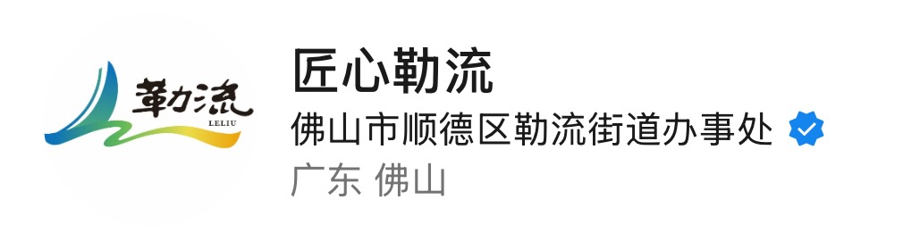
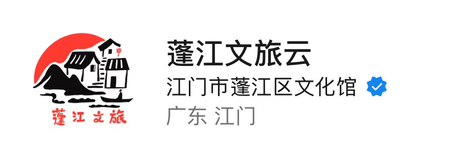

主要负责顺德就业通和顺德城市网以及其他与政府合作的微信公众号运营。其中，顺德就业通运营一年涨粉1.8w，破历史最高阅读量1.9w；顺德城市网运营5个月涨粉近5k，最高阅读量2.7w。
政府合作项目 | 就业服务平台
运营时间：2022年3月 - 2023年2月
及时发布和解读国家、省、市就业相关政策，帮助求职者了解最新就业信息。
定期发布企业招聘信息，为求职者提供丰富的就业机会。
提供简历制作、面试技巧、职业规划等就业指导内容。
发布就业市场分析报告，帮助求职者了解就业趋势。
城市文化与生活平台
运营时间：2022年4月 - 2022年9月
及时发布顺德区最新新闻资讯，让市民了解城市发展动态。
宣传顺德区各类文化活动，丰富市民文化生活。
推荐顺德特色美食和旅游景点，促进文化旅游发展。
提供市民生活相关的服务信息，方便市民日常生活。


聚焦信息的全面性、真实性，整合来自多渠道的零散消息，进行系统化梳理、分类和筛选。
将专业术语密集的官方文件，转化为通俗易懂、贴近生活、实用性强的解读文章。
以"读者友好"为核心，进行舒适合理的排版设计，兼顾美观度与可读性。